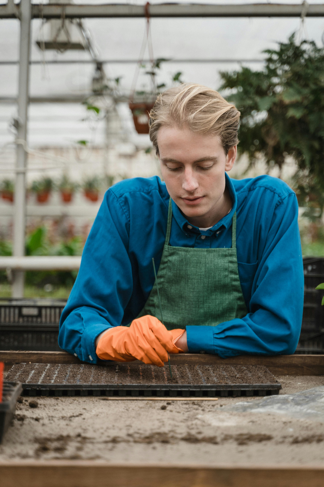

Meet the GrowHub Team

John Doe
CEO

Jane Smith
Agronomist

Alex Johnson
Community Manager
GrowHub is a task management and community platform designed to support urban agriculture and community gardens. Our mission is to help communities grow together by providing the tools and resources needed for successful urban gardening.
CEO
Agronomist
Community Manager
Founder & Lead Developer
Lamprini is the founder and developer behind the GrowHub platform, leading the website with a passion for web development and community building. She holds a degree in
Management Science and Technology, with a major in Software Engineering and Data Science, and a minor in Strategy, Entrepreneurship, and Human Resources.
She is also a Cybersecurity and Networks senior student at the American College of Greece.
With a strong background in software engineering, data science, and cybersecurity, Lamprini ensures that GrowHub’s technical foundation remains secure, efficient, and scalable.